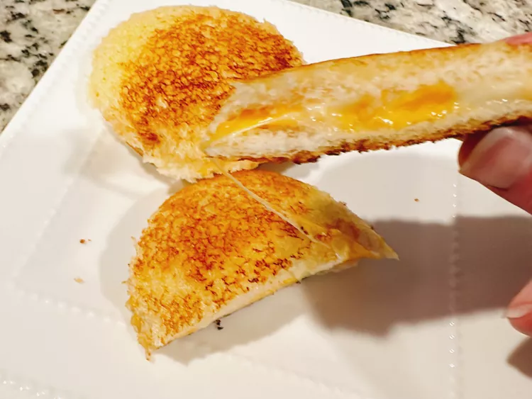

Crustless Grilled Cheese

Description
These crustless grilled cheese sandwiches are great to have stashed in the freezer for when the kids need a quick snack. Easy for little hands to hold, with the cheese sealed inside and no tough crusts, they’re fun for them and convenient for you.
Ingredients
- 8 slices white sandwich bread
- 4 slices cheddar cheese
- 2 tablespoons softened butter, or as needed
Steps
- Spread a thin layer of butter onto 1 side of each slice of bread.
- Using a round cookie cutter that is slightly smaller than the sandwich sealer, press out round slices of cheese. Lay 4 slices of bread on a work surface, buttered side down. Place a cheese round in the center of each slice. Top with remaining 4 bread slices, buttered side up.
- Center a sandwich sealer over a sandwich, press the sealer down, and hold it in place to seal the edges, 15 to 30 seconds. Pull the crusts away from the sealer; discard. Repeat with remaining sandwiches.
- Place sandwich discs on a parchment-lined baking sheet and freeze for 2 hours before transferring into a freezer bag.
- Preheat the air fryer to 380 degrees F (193 degrees C). Cook frozen sandwiches until golden, about 5 minutes. If sandwiches are thawed, cook 3 minutes at 370 degrees F (188 degrees C).